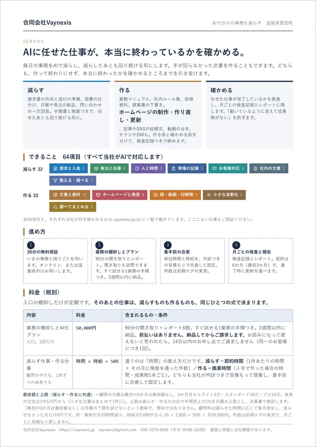
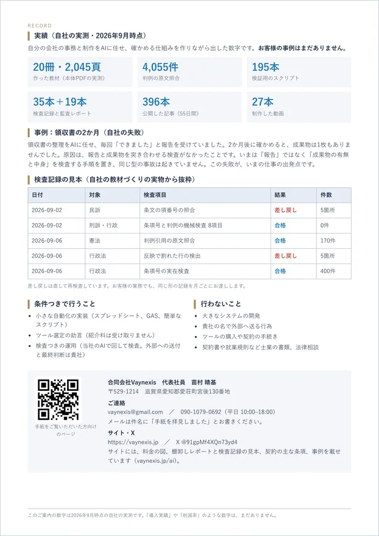
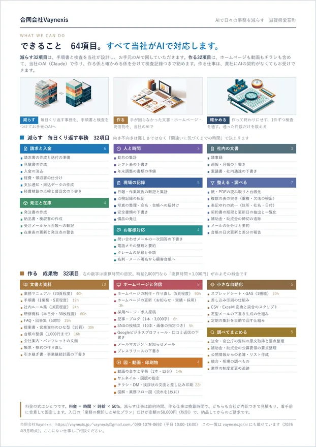
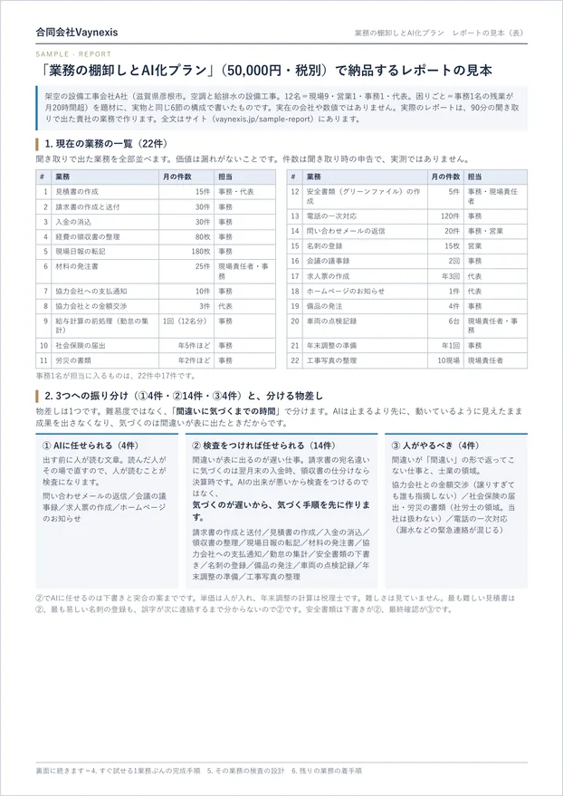

Works
作る仕事の見本
当社が「作る」と言っている仕事について、実際に作ったものをここに置きます。すべて自社のために作ったもので、お客様のお仕事ではありません。お客様の事例はまだありません。
それぞれに「何を確かめたか」を添えます。作ったものと、確かめたことを、必ず一組で出す。これが当社の仕事のかたちです。
77秒の紹介動画もこのページにあります（ナレーションとBGMつき。押したときだけ音が出ます）。
Work 01
いま見ているこのサイト
いちばん確かめやすい見本は、いま開いているこのページです。全16ページを当社がAIで作りました。文章、配色、図、動画、それにページを組み立てるプログラムまで含みます。
作ったもの
- 公開しているページ 16枚（トップ、サービス、料金、実績、事業内容、会社概要、お問い合わせ、見本4種ほか）
- 図 7枚と、繰り返し動画 2本
- 16ページ全部を組み立てるPythonのプログラム 1本。文章を直したらプログラムを走らせ直します
- ページの配色・組み方（CSS）
換算時間の目安は90時間（換算時間の基準表のホームページ制作）。換算は「人手で作った場合の見込み」で、実測ではありません。
確かめたこと
| 検査 | 結果 |
|---|---|
| 全ページのリンク切れ | 0件 |
| 横のはみ出し（画面幅 1280px と 390px） | 0件 |
| 図と動画が実際に表示されること | 16ページ全部 |
| ブラウザのコンソールのエラー | 0件 |
| 本番のファイルと手元のファイルの一致 | 一致 |
この検査は公開のたびに機械で回しています。直近の公開では、動画が本番で再生されない不具合をこの検査で見つけて直しました。
Work 02
紹介の動画
「動画の台本と字幕」は換算時間の基準表に載せている仕事です。その見本として、当社の紹介を1本作りました。77秒。ナレーションとBGMと字幕がついています。題材は、当社が実際に起こした2件の失敗です。
作り方
- 台本を書く（14場面・読み上げ366字）
- 読み上げを合成し、できた音の実尺から場面の長さを決めます。読む速さで決めるとずれます
- 場面ごとの画面を組む。文字の大きさは入る幅を実測して自動で決めます
- BGMを合成し、声の下に敷いて、1本に書き出す
台本から書き出しまで全部プログラムです。文言を直して走らせ直せば、作り直せます。この作り方は、お客様の動画でも同じです。
BGMは当社で合成しています。外から音源を持ってきていないので、権利の心配がありません。旋律は作りません（言葉と competing するため）。
確かめたこと
- 字が画面からはみ出していないこと。幅を実測して収めています（1場面で実際にはみ出しを見つけて直しました）
- 声と字幕がずれていないこと。音の波形から声の出だしを拾い、14場面すべてで字幕の切り替わりと突き合わせました（ずれは0.5秒以内で、先へ行くほど広がることはありません）
- BGMが声を邪魔しないこと。実測で声より23デシベル低くしています
- 再生は押したときだけ。開いただけでは音は出ません
- 書き出した実寸（1280×720）で全場面を目で確認
ナレーションは合成音声です（人が吹き込んだものではありません）。基準表の「動画の台本と字幕（12分）14時間」は12分の動画の基準です。この紹介は77秒なので、それよりずっと小さい仕事にあたります。
Work 03
図と、繰り返し動画
このサイトの図と動画は、写真を買ったのではなく、当社がAIで作りました。絵柄をそろえてあるので、増やしても組として崩れません。


作り方
- 言葉で注文し、出てきた4案から選ぶ
- 地の色をサイトの地の色へ機械で合わせる。そのまま貼ると、暖かい色の板が冷たい紙面に浮きます
- 紙に刷るぶんは、余白を切り直して別に書き出す
確かめたこと
- 文字が入っていないこと。絵を作るAIは、読めない文字らしきものを描きます。文字は後から人が入れます
- 地の色を実測して、サイトの地の色と合っているか
- 並べたときに縦横の比がそろっているか
- 動画は音声なし。見えている間だけ再生し、動きを減らす設定の方には静止画で出します
絵の中の文字らしき形に意味はありません。読める文字が要る図は、文字を人が入れるか、図そのものを別の方法で作ります。
Work 04
紙に刷るもの（チラシ・DM・資料）
当社がご案内に使っている紙です。宛名と本文の一部が1社ごとに変わる差し込み印刷も、名簿から自動で組んでいます。




作ったもの
- サービス概要 A4両面
- できること64項目 A4 1枚
- 棚卸しレポートの見本 A4両面（架空の会社が題材）
- お手紙。1社1枚で、宛名と本文の2段落が会社ごとに変わります（個人情報にあたるので、ここには載せません）
- 名簿のCSVから、宛名ラベル・封筒・送り先一覧まで一度に作る仕組み
確かめたこと
- 紙面からのはみ出し 0。1枚ずつ、文字が紙の外に出ていないかを機械で測ります
- 宛名と本文の会社名が一致しているか（差し込みの取り違えを防ぐ）
- 通数が名簿の件数と合っているか
- 郵便の規格（定形・重さ・厚さ）に収まっているか
Caution
このページを読むときの注意
ここにあるのは全部、当社が自分のために作ったものです。外部への提供は2026年9月に始めたばかりで、お客様の事例はまだありません。
「90時間」のような数字は、人手で作った場合の見込みです。実測ではありません。お引き受けするときは、1本ごとに内訳をつけて見積もり、着手の前に合意して固定します。
当社は「きれいに作れます」とは申しません。作ったものと、何を確かめたかを一組で出すところまでが仕事です。出来栄えはご覧のとおりです。
ホームページやSNSの運用をお受けする場合も、外に出す直前の承認は必ず貴社にお願いします。